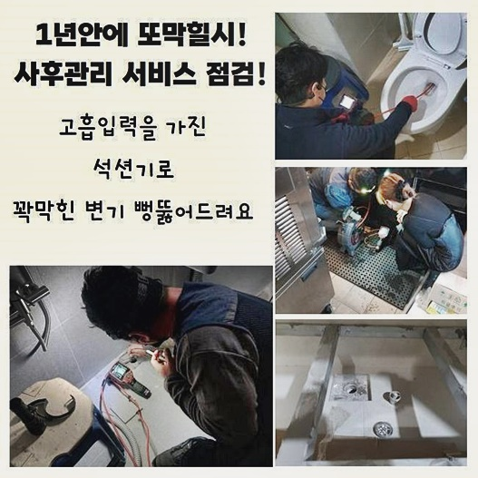
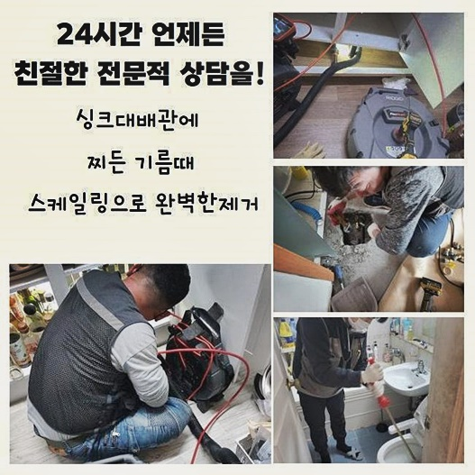
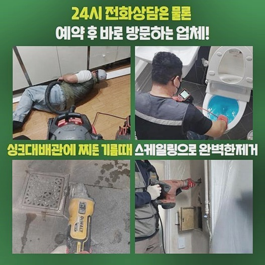
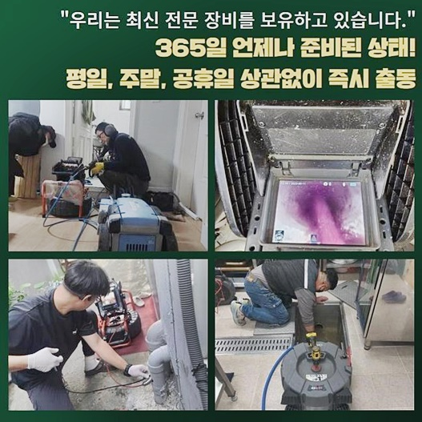
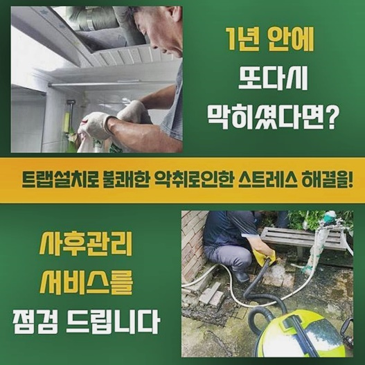

🏠 송파구 잠실동욕실막힘 가락본동 하수구뚫어주는곳 물샘전문업체
용인시 처인구 배관막힘 전문 시공 후기

📋 작업 개요
- 위치: 용인시 처인구, 수원시 영통구, 화성시 동탄
- 서비스 유형: 배관막힘, 누수수리, 고압세척, 내시경점검
- 작업 일시:
- 업체명: 하수구수사대 (010-5615-2118)
🔍 문제 상황
송파구 잠실동욕실막힘 가락본동 하수구뚫어주는곳 물샘전문업체
주방에서 배수장애가 발발하면 주방의 배수관로와 다른공간의 배수관로들도 보건적으로 좋지못해요
또한 배수장애가 생기게됐는데 방임적인 태도로 일관하면 바닥으로 새는 경우도 있고 아래세대에도 누수증상이 번질 수 있답니다
해결하기 힘든 사안이 아닐것이다 방심한다면 예상치못하게 더욱 심한 문제들이 생겨나고 해당 상황에서 일차원적인 방법을 시도할지라도 해결에는 닿을 수 없어요
배수장애가 생겼을때 불상사가 안생기도록 하려면 어떻게 바로 잡아야되는지 현장모습을 보며 살펴보도록 해요
하수관에 증세가 야기된 장소로 불편사항이 접수되고서 저희들은 즉시 당도했어요
막히게된 것이 며칠이 경과되었고 바로 연락주시지 않은 이유를 고객분은 위태로운것이 아닌것으로 여기시는 바람에 문의가 더뎌진것이라 설명했어요
하지만 기간이 지날수록 사태가 심해져서 의뢰를 주신 상황이였죠
원인을 정확하게 관찰할 목적으로 배수구를 살펴보았더니 하수관에서 역류되는 증상이 목격되었어요
이런 현상은 금방 해결되는 증세가 아닌 심화된 문제임을 의미하는 시그널입니다
빠르게 내시경을 관로로 투입시켜 관찰하니 초입부터 이물로 가득한걸 정확히 인지했습니다

🔎 원인 분석
💡 전문가 진단: 정밀 진단 장비를 사용하여 슬러지의 고착 여부를 판명하고 타격/세척 작업을 실시했습니다.
증상을 해결할 목적으로 내시경장비를 빼내고 석션기기를 가용해 부유물을 제거시키는 과정들을 이행했어요
해당 진행상황을 진행하는 시점에 석션장비의 앞부분을 잔해물을 조여주어서 잔해가 흡입되도록 잡아주는것이 중요하겠습니다
석션장치를 그저 작동시켜서는 효과가 미미하기에 틈새를 허용하지않고 빨아당겼어요
간단한 사안일땐 스프링장비를 운용시켜 막혀버린 곳을 뚫어내는 경우도 사용할 수 있겠지만 오늘의 경우 오염물을 오차없이 빨아내는 것이 마지막으로나서 증세를 예방해주는데 큰 효과를 보이기때문에 흡입하는 방법을 선정한건데요
지속적으로 이물을 뺀 후 다시 내시경장치를 밀어넣어 내부 상황을 살펴보았습니다
큰 덩어리는 거의 사라졌지만 현재 배수관의 깊은 지점은 공간이 보이지 않을만큼 막히게 된 현상을 보이고 있었습니다
막히게 된 지점을 시정하고자 맨땅의 헤딩 식인 석션장치의 사용은 궁극적으로 해결되지 못한다 생각을 하게 되었어요
마지막으로나서에 스케일링 흐름을 거치도록 샤프트장치 사용을 진행해주는걸로 하였는데요
곧이어 기기를 선정해 진행시킬 방식들과 관련해서 고객분에게 정확히 말씀드렸어요
이럴땐 고객님도 전 단계의 흐름을 이해하고 있는게 중요하기때문에 꼼꼼한 내용전달로 이해되실 수 있게 하고 문제들을 올곧이 바로잡도록 노력했어요
배수장애의 경우 갑작스럽게 생길 수 있으나 적합한 대응이 늦는다면 불편들과 예상치못한 작업비를 감수해야되는걸 기억해주세요

🔧 작업 과정
설명 이 단계 다음엔 의뢰자께선 곧이어 청소들을 원하시어 재빨리 장비를 준비했죠
마련한 것은 샤프트장치와 진단에 사용됐던 내시경카메라로 누적된 잔해물을 타격하여 컨디션 복구를 해보았어요
곧이어 샤프트장치를 배수라인으로 투입해서 내시경장치까지 병행하며 누적된 이물을 제거시키는 단계를 수행했습니다
육안으로 볼 수 없는 배수관을 확인하면서 수리를 속행해주어야 내부에 쌓인 오염원을 확실하게 없앨 수 있어요
곧이어 위처럼 청소를 진행할 땐 내시경기기를 사용해서 여러분들도 확인할 수 있기에 신뢰있는 청소를 완벽하게 느끼실 수가 있습니다
지속적으로 아래 내부에 존재하는 잔해물을 걷어내면 배수관의 깊숙한 스팟엔 잔해물이 침전되기에 석션장비를 이용해 빨아들여줍니다
통수오류를 발발케하는 잔재들을 제거하고 내시경장비로 심층부까지 검수하는데 전 구간에 걸쳐 깨끗히 고쳐진 현상을 고객분과 확인했어요
위처럼 저희업체는 결과들을 의뢰인과 함께 확인하죠
잔해가 잔존한 상태에서 관로가 막히게된 것을 시정하지 못할 시 역류증상이 생긴다거나 곧이어 악취가 생겨버리게되니 해당 사항을 알아두셨다가 척도를 실시하길 권장드리겠습니다
또다시 타 공간에 각 라인에 증세가 발발하여 달려갔는데 내방한 뒤 배관이 어떠한 모습인지 내시경장치로 신속히 관찰했습니다
확인결과 깊숙한 구간에도 기름들이 단단하게 쌓이는 바람에 이물질들이 각 라인마다 붙어버림과 동시에 단단하게 변해버린걸 목격했습니다
곧장에 바로 세척과정에 돌입했습니다
1차적으로 간단하게 시정해줄 수 있는 사안인지 체크해보고자 바닥으로 하수관에 석션기기를 넣어서 잔재들을 흡입하는 청소를 진행했습니다
곧이어 청소를 충분히 이행하고 내부 모습을 체크해보니 아래에 이물이 온전히 사라지지않은것을 목격했습니다
곧이어 해당 지점을 타겟으로 해 청소해주었어요
이용해야할 장치는 샤프트장치로 하수라인에 삽입하여 헤드부에 달린 사슬을 신속히 회전을 시켜 오염원을 서둘러 걷어내는 수리를 진행했습니다
회전되면서 오염원을 분쇄한 뒤 흡입장치로 깊이 떨어지지않게 빠르게 제거시켰습니다


✅ 작업 완료
그 다음으로 내시경으로 또 다른 문제들이 존재하는지 확인하였어요
최종적으로 배수관으로 하수를 붓고 배수상태를 확인하니 원활하게 빠지는걸 체크해보았습니다
안전하게 배수관련 난관들을 고쳐야하는 시점에 곧장 저희배관 해결사들을 부르시면 통수관련한 청소를 수행합니다
전화주시고 계신 곳으로 한시간내 방문드리고 있으므로 염려하실 필요없으십니다
최종단계로 편한 스케줄의 날짜가 있다면 지정가능하니 이런 사안까지 참고 부탁드립니다!


⚠️ 하수구 배관 막힘 예방 및 관리 가이드
- ✅ 머리카락, 비닐, 물티슈 등 물에 분해되지 않는 이물질은 절대 흘려보내지 마세요.
- ✅ 기름기 많은 식기는 설거지 전 키친타올로 먼저 기름때를 닦아내세요.
- ✅ 주기적으로 배수구에 뜨거운 물을 가득 부어주어 유지방 고착을 방지하세요.
- ✅ 작업 후 1년 이내 재발 시 무상 A/S 보증 서비스를 제공합니다.
💡 핵심 정리
- 확실한 장비 작업(내시경 점검 및 샤프트 스케일링)으로 원인을 뿌리 뽑습니다.
- 작업 후 1년 이내에 동일한 부위 재발 시 100% 무상 A/S 서비스를 보장합니다.
- 서울 · 경기 · 인천 전 지역에 24시간 언제든 긴급 출동할 수 있도록 항시 대기 중입니다.
❓ 자주 묻는 질문 (FAQ)
🚨 용인시 처인구 배관막힘 문제로 고민이신가요?
정확한 원인 진단과 확실한 시공으로 재발 없는 해결을 약속드립니다.
24시간 긴급 출동 | 서울 · 경기 · 인천 전지역 | 1년 내 재발 시 무상 A/S